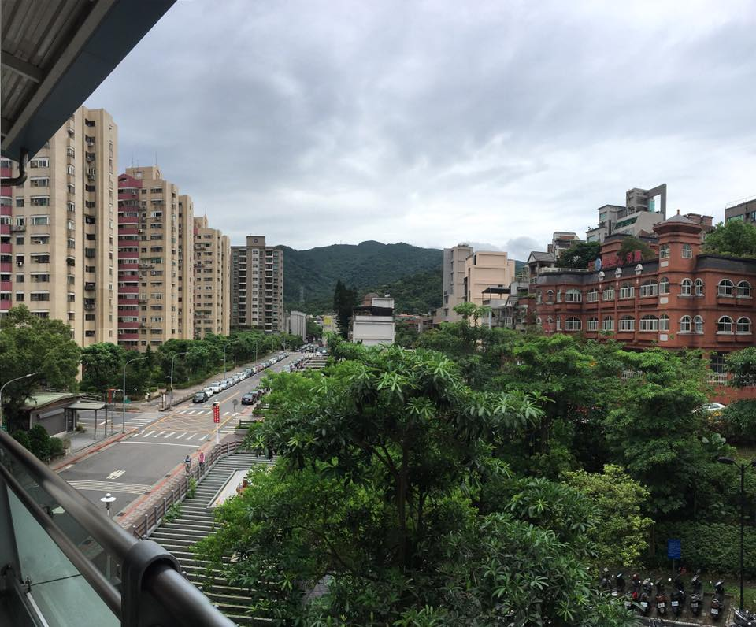
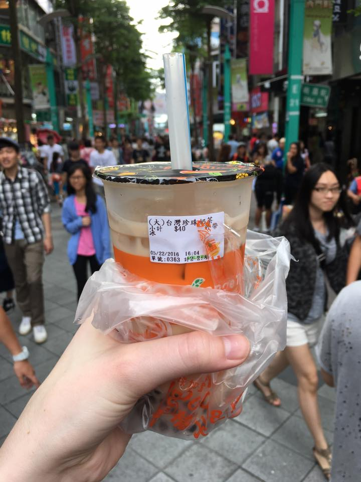
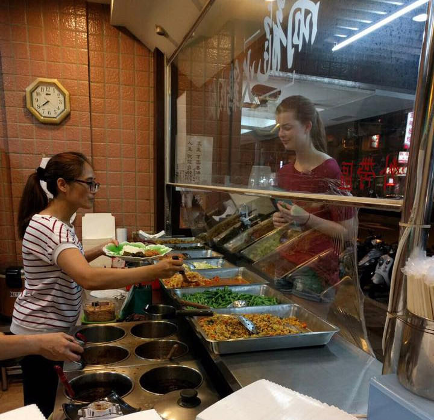

I'm spending my summer in Taiwan and have already been here for one week!
When I first arrived I was extremely exhausted from not being able to sleep on the airplane and also my night in Japan, but was too excited to really feel tired. Seeing Taiwan and Taipei from the sky as my plane descended was almost overwhelming because I'd been waiting for so long to come here! I arrived at the airport around noon, went through customs (was super fast), bought a SIM card (4 months of unlimited data for $70 USD!), and caught a taxi to my host family's house. The taxi ride was so cheap, only $7 USD!
That first Saturday when I arrived was pretty uneventful because of how tired I was. I chatted with my host family lady and the Korean student who was there for the next few days and then basically crashed and slept for a long time.
One thing they didn't tell me about jet lag was that not only would I be waking up wide alwake at random times throughout the night, but also that I was only hungry at night too. The combination of jet lag and my stomach being angry at all the new food meant I wasn't able to eat much my first few days :(
The next Sunday and Monday, Lisa, me, and the Korean student went out to explore Taiwan. We went to so many places. Taipei 101, Longshan Temple, Ximen shopping district, a museum, a park, Taipei's equivalent of the White House, Chiang Kai-shek Memorial Hall, and many others.
My class started on Wednesday and I'm really enjoying that so far. My class has me (an American), an Australian, 3 Koreans, 3 Japanese, and a Vietnamese student. I have class every day for 3 hours. A Japanese student lives in the other bedroom of my host family so every day we go to class together and then usually eat lunch or go see something in Taipei.
I've never been in a foreign country before, much less a minority in a foreign country! The first time I walked around my neighboorhood by myself on Sunday morning I noticed that many people would look at me and I was also very nervous to go anywhere and buy something so I just went into a 7-11 and bought grapefruit juice.
Some things I didn't expect: I think the weather so far has been much hotter and more humid in the morning, and then it cools off later. The sunrise and sunset times are also different, the sun rises at 5 AM here and sets at around 6:30! I also thought I would have a major problem with getting sunburned with how hot and South Taiwan is, but most of the time it's cloudy so I haven't even bought sunscreen yet.
Even though it's only May, mosquitos are everywhere here! I went walking at night in the city the other day and got bit so many times! The bites are also different here. There are regular mosquito bites, but also tiny red ones that hurt. Lesson learned: The next day I bought mosquito spray. The lady in Watson's (pharmacy store that's everywhere here) was probably wondering why I was so grateful when she showed me where the mosquito spray was but if she saw my ankles she would understand.
Everything here is SO convenient. The public transportation is very cheap and it's so easy to get around. There are 7-11s everywhere and you can do so many things there, from buying food and drinks, to using the ATM, buying stamps, and they also have daily necessities. I think there are more 7-11s in Taipei than trash cans outside (not an exaggeration). Food shops are everywhere so if you're looking for something to eat, you can just start walking and you'll find something you like. And when you order something to drink here, they have little machines that seal the top for you. Then you have a pokey straw to use. I don't even want to know how many huge cups of boba milk tea I've drank this past week.
I found "Black People Toothpaste" in a shop in Taiwan, it exists and is everywhere! Here is the full story on this.
My school only has squat toilets...at first I was dreading them but it's not so bad!
The streets are so clean here and in my opinion, every place is so beautiful!
You don't really get ice water here in the restaurants, and it seems like people here don't drink much with their meals? I'm told I drink a lot of water. If I don't drink water when I eat food I feel like I'm going to choke so I'm not sure how/why people do it here.
So many dogs and cats. Sometimes you'll see what you think is a feral dog but he actually has a collar and belongs to somebody but just hangs out around the area. People bring their dogs a lot of places and even in baby strollers!
Ordering food is hard because I don't have enough vocabulary to order what I want all the time. However, people here are so nice and can also speak a little English. Food is also so cheap! Food shops are everywhere and most of them are mom and pop stores, not chains, so the food is always delicious.
I also keep getting compliments on my (sickly) pale complexion from strangers and people I know here. Back in America I always wanted to be tan but never could, but here they really like white skin. There are tons of creams in the stores to lighten skin and women always carry umbrellas when the sun is out to avoid getting more tan.
A link to my full album of Taiwan photos can be found here. Keep checking back for weekly updates!
Questions? Comments? Don't hesitate to contact me!